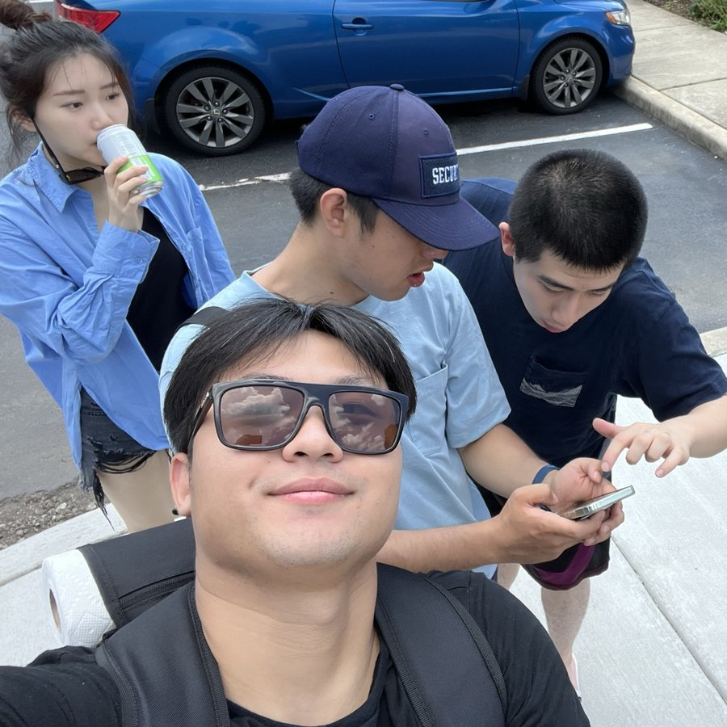

Hey! I'm Chase :)
I like to tinker with AI, data, brains, and whatever else makes me curious.

I did my CS Ph.D. at UChicago, advised by Nick Feamster. before that, CS + econ at Colgate with Aaron Gember-Jacobson.
some things about me:
- I started out building efficient real-time ML systems for networks, then taught diffusion models and SSMs to speak network protocols, and did some very cool security stuff for DARPA's RACE program
- I was a student advisor for the NSF ACTION Institute
- these days I'm doing some brain AI at a cool company
- I've written some cool papers and picked up a few patents along the way
- I've worked at some random spots just because they intrigued me
- network anomaly detection at NetMicroscope (it ran at Apple and Comcast)
- made generative AI training 30x faster at Rockfish (it served AWS, Snowflake, Ford, CMU, and the U.S. Army)
- dug into china's tech and telecom markets at Red Pulse, a crypto firm (rip, they're not a thing anymore)
- built loan and mortgage risk models at China Everbright Bank and China Construction Bank
- taught industrial robots to take smarter paths at Stäubli (~2x faster)
- I split my time between SF and NYC
Research
what I spend my days thinking about.
- neuro for AI, or vice versa :)
- generative models, from SSMs to diffusion models to transformers
- synthetic data generation
- ML-driven network traffic modeling
- real-time data systems
- network analysis & security
- protocol-constrained generation
Selected papers
a few favorites. full list is in my cv.
- SIGMETRICS '26 CAP: Detecting Network Device Misconfigurations with Context-Aware Prompting of LLMs
- CoNEXT '25 NetSSM: Multi-Flow and State-Aware Network Trace Generation using State-Space Models
- CoNEXT '25 JITI: Dynamic Model Serving for Just-in-Time Traffic Inference
- SIGMETRICS '24 NetDiffusion: Network Data Augmentation Through Protocol-Constrained Traffic Generation
- KDD '23 Augmenting Rule-based DNS Censorship Detection at Scale with Machine Learning
- WWW '23 Measuring and Evading Turkmenistan's Internet Censorship
Fun facts
things I've gotten curious about along the way.
- I play five instruments
- started on bamboo flute, these days it's mostly guitar
- I went through a pretty serious bodybuilding phase
- qualified for nationals, one step away from a pro card
- I once built a dating app to set up my best friend
- (it worked!)
- I'm one of the (many, many) contributors to Humanity's Last Exam
- hopefully not the last one I write questions for
Say hi!
always happy to chat about research collabs, startups, or anything cool. email me at chase(at)aresneuro(dot)removethiscom